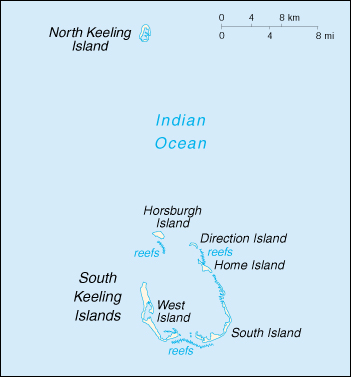

(territory of Australia)

|
Cocos (Keeling) Islands (territory of Australia) |
|
| Introduction Geography People Government Economy Communications Transportation Military Transnational Issues | ||
|  | ||
| Cocos (Keeling) Islands | Introduction | Top of Page |
| Background: | The islands were discovered in 1609, but remained uninhabited until the 19th century. Annexed by the UK in 1857, they were transferred to the Australian Government in 1955. The population on the two inhabited islands is split between the mostly Europeans on West Island and the Malays on Home Island. |
| Cocos (Keeling) Islands | Geography | Top of Page |
| Location: | Southeastern Asia, group of islands in the Indian Ocean, south of Indonesia, about one-half of the way from Australia to Sri Lanka |
| Geographic coordinates: | 12 30 S, 96 50 E |
| Map references: | Southeast Asia |
| Area: |
total:
14 sq km
land: 14 sq km water: 0 sq km note: includes the two main islands of West Island and Home Island |
| Area - comparative: | about 24 times the size of The Mall in Washington, DC |
| Land boundaries: | 0 km |
| Coastline: | 2.6 km |
| Maritime claims: |
exclusive fishing zone:
200 NM
territorial sea: 3 NM |
| Climate: | pleasant, modified by the southeast trade winds for about nine months of the year; moderate rainfall |
| Terrain: | flat, low-lying coral atolls |
| Elevation extremes: |
lowest point:
Indian Ocean 0 m
highest point: unnamed location 5 m |
| Natural resources: | fish |
| Land use: |
arable land:
0%
permanent crops: 0% permanent pastures: 0% forests and woodland: 0% other: 100% (1993 est.) |
| Irrigated land: | NA sq km |
| Natural hazards: | cyclones may occur in the early months of the year |
| Environment - current issues: | fresh water resources are limited to rainwater accumulations in natural underground reservoirs |
| Geography - note: | two coral atolls thickly covered with coconut palms and other vegetation |
| Cocos (Keeling) Islands | People | Top of Page |
| Population: | 633 (July 2001 est.) |
| Age structure: |
0-14 years:
NA%
15-64 years: NA% 65 years and over: NA% |
| Population growth rate: | -0.21% (2001 est.) |
| Birth rate: | NA births/1,000 population |
| Death rate: | NA deaths/1,000 population |
| Net migration rate: | NA migrant(s)/1,000 population |
| Infant mortality rate: | NA deaths/1,000 live births |
| Life expectancy at birth: |
total population:
NA years
male: NA years female: NA years |
| Total fertility rate: | NA children born/woman |
| HIV/AIDS - adult prevalence rate: | NA% |
| HIV/AIDS - people living with HIV/AIDS: | NA |
| HIV/AIDS - deaths: | NA |
| Nationality: |
noun:
Cocos Islander(s)
adjective: Cocos Islander |
| Ethnic groups: | Europeans, Cocos Malays |
| Religions: | Sunni Muslim 57%, Christian 22%, other 21% (1981 est.) |
| Languages: | English, Malay |
| Cocos (Keeling) Islands | Government | Top of Page |
| Country name: |
conventional long form:
Territory of Cocos (Keeling) Islands
conventional short form: Cocos (Keeling) Islands |
| Dependency status: | territory of Australia; administered from Canberra by the Australian Department of the Environment, Sport, and Territories |
| Government type: | NA |
| Capital: | West Island |
| Administrative divisions: | none (territory of Australia) |
| Independence: | none (territory of Australia) |
| National holiday: | NA |
| Constitution: | Cocos (Keeling) Islands Act of 1955 |
| Legal system: | based upon the laws of Australia and local laws |
| Suffrage: | NA |
| Executive branch: |
chief of state:
Queen ELIZABETH II (since 6 February 1952), represented by the Australian governor general
head of government: Administrator (non-resident) William Leonard TAYLOR (since 4 February 1999) cabinet: NA elections: none; the monarch is hereditary; administrator appointed by the governor general of Australia and represents the monarch and Australia |
| Legislative branch: | unicameral Cocos (Keeling) Islands Shire Council (NA seats) |
| Judicial branch: | Supreme Court; Magistrate's Court |
| Political parties and leaders: | none |
| Political pressure groups and leaders: | none |
| International organization participation: | none |
| Diplomatic representation in the US: | none (territory of Australia) |
| Diplomatic representation from the US: | none (territory of Australia) |
| Flag description: | the flag of Australia is used |
| Cocos (Keeling) Islands | Economy | Top of Page |
| Economy - overview: | Grown throughout the islands, coconuts are the sole cash crop. Copra and fresh coconuts are the major export earners. Small local gardens and fishing contribute to the food supply, but additional food and most other necessities must be imported from Australia. |
| GDP: | purchasing power parity - $NA |
| GDP - real growth rate: | NA% |
| GDP - per capita: | purchasing power parity - $NA |
| GDP - composition by sector: |
agriculture:
NA%
industry: NA% services: NA% |
| Population below poverty line: | NA% |
| Household income or consumption by percentage share: |
lowest 10%:
NA%
highest 10%: NA% |
| Inflation rate (consumer prices): | NA% |
| Labor force: | NA |
| Labor force - by occupation: | the Cocos Islands Cooperative Society Ltd. employs construction workers, stevedores, and lighterage workers; tourism employs others |
| Budget: |
revenues:
$NA
expenditures: $NA, including capital expenditures of $NA |
| Industries: | copra products and tourism |
| Industrial production growth rate: | NA% |
| Electricity - production: | NA kWh |
| Electricity - production by source: |
fossil fuel:
NA%
hydro: NA% nuclear: NA% other: NA% |
| Electricity - consumption: | NA kWh |
| Agriculture - products: | vegetables, bananas, pawpaws, coconuts |
| Exports: | $NA |
| Exports - commodities: | copra |
| Exports - partners: | Australia |
| Imports: | $NA |
| Imports - commodities: | foodstuffs |
| Imports - partners: | Australia |
| Debt - external: | $NA |
| Economic aid - recipient: | $NA |
| Currency: | Australian dollar (AUD) |
| Currency code: | AUD |
| Exchange rates: | Australian dollars per US dollar - 1.7995 (January 2001), 1.7173 (2000), 1.5497 (1999), 1.5888 (1998), 1.3439 (1997), 1.2773 (1996) |
| Fiscal year: | 1 July - 30 June |
| Cocos (Keeling) Islands | Communications | Top of Page |
| Telephones - main lines in use: | NA (1999) |
| Telephones - mobile cellular: | 0 (1999) |
| Telephone system: |
general assessment:
NA
domestic: NA international: telephone, telex, and facsimile communications with Australia and elsewhere via satellite; 1 satellite earth station of NA type |
| Radio broadcast stations: | AM 1, FM 0, shortwave 0 (1998) |
| Radios: | 300 (1992) |
| Television broadcast stations: | 0 (1997) |
| Televisions: | NA |
| Internet country code: | .cc |
| Internet Service Providers (ISPs): | 2 (2000) |
| Internet users: | NA |
| Cocos (Keeling) Islands | Transportation | Top of Page |
| Railways: | 0 km |
| Highways: |
total:
15 km
paved: NA km unpaved: NA km (2001) |
| Waterways: | none |
| Ports and harbors: | none; lagoon anchorage only |
| Merchant marine: | none (2000 est.) |
| Airports: | 1 (2000 est.) |
| Airports - with paved runways: |
total:
1
1,524 to 2,437 m: 1 (2000 est.) |
| Cocos (Keeling) Islands | Military | Top of Page |
| Military - note: | defense is the responsibility of Australia |
| Cocos (Keeling) Islands | Transnational Issues | Top of Page |
| Disputes - international: | none |
{kind=link}